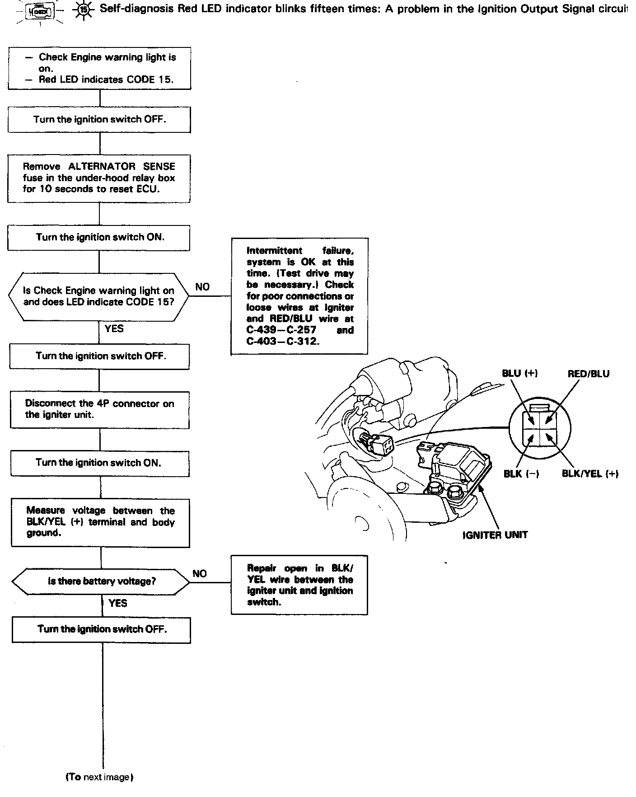
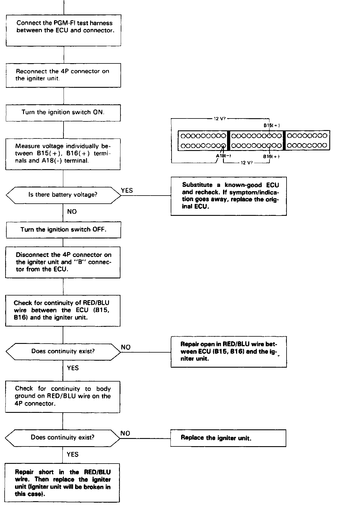
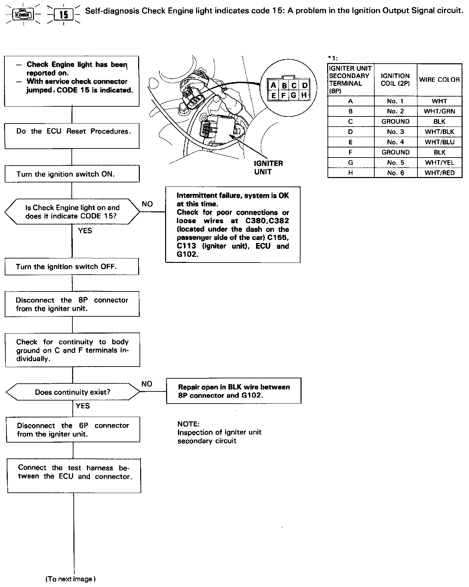
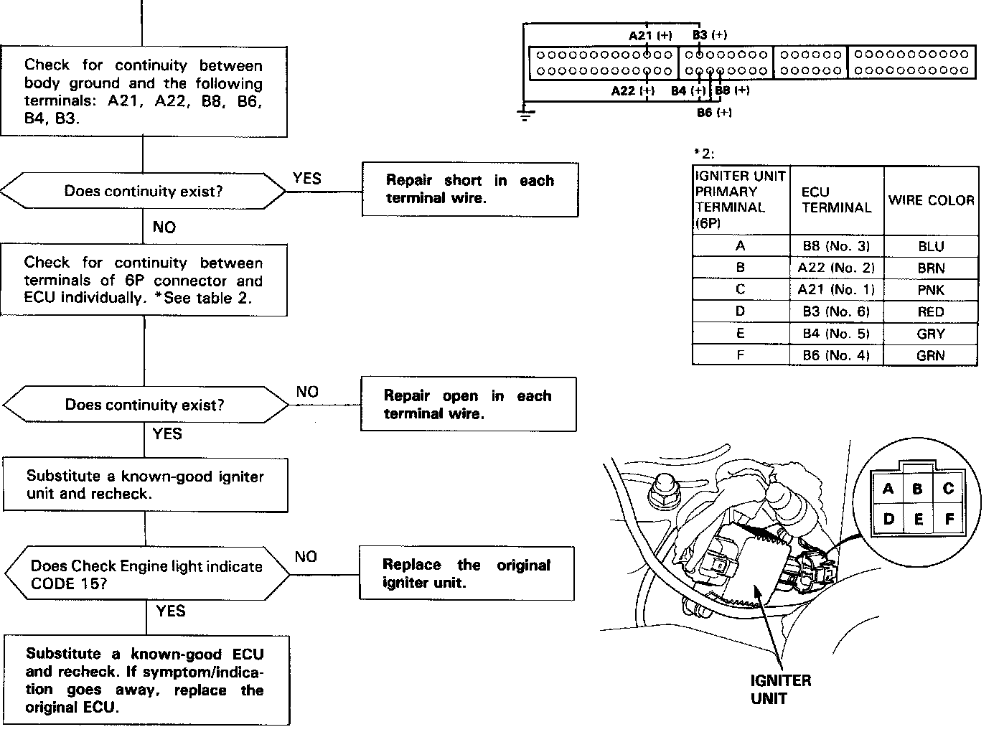
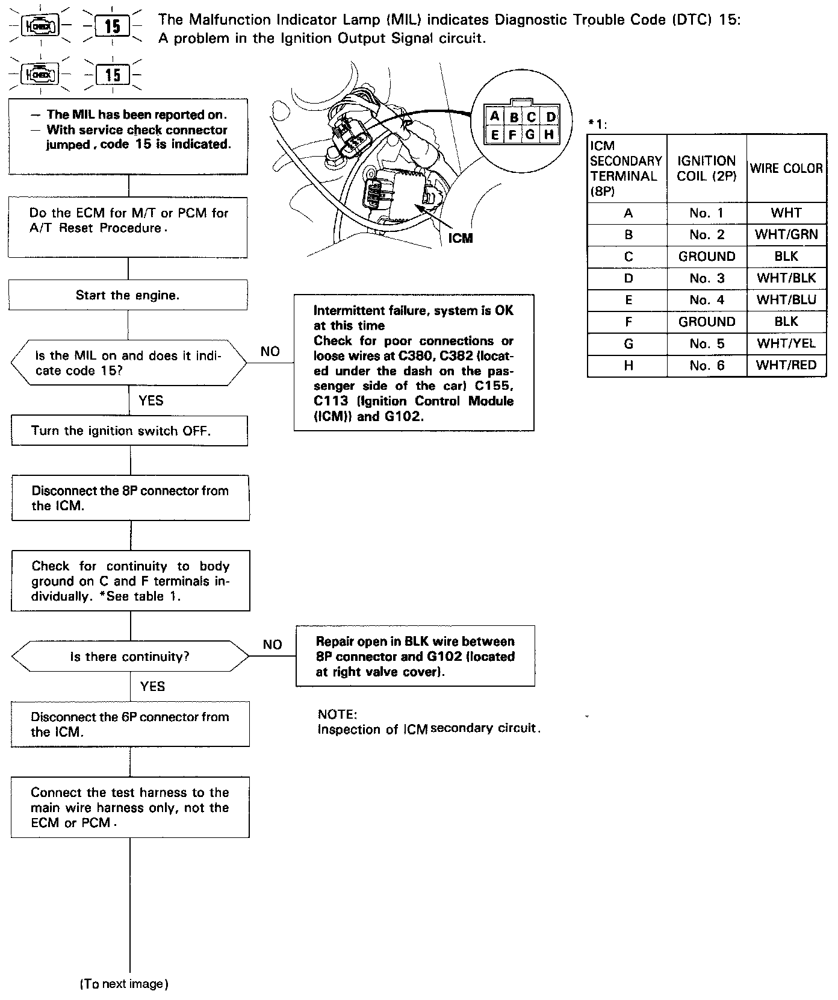
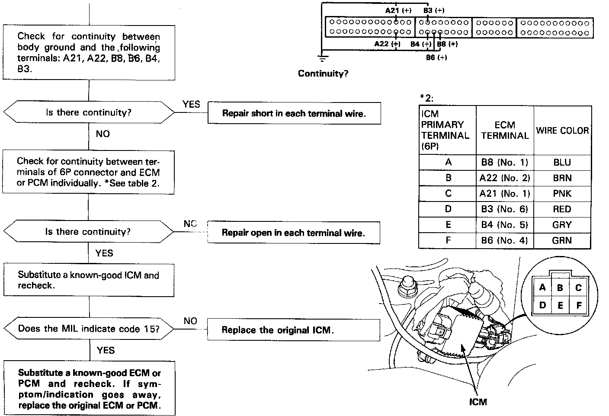
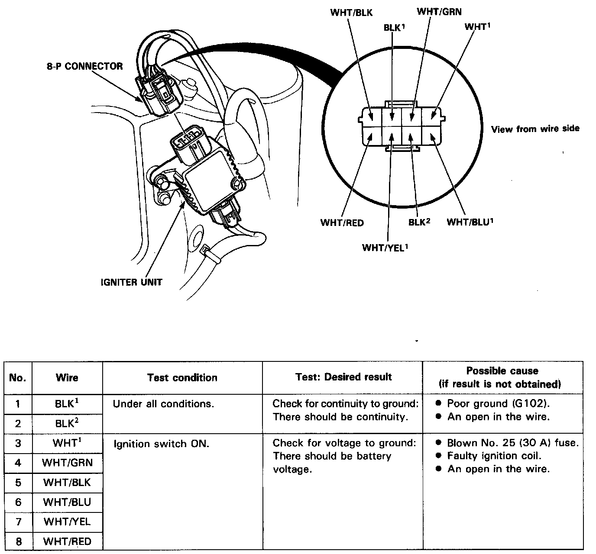

Tachometer: Testing and Inspection
O.E. does not provide a test procedure for the TACHOMETER.Ignition Output Signal (igniter)


1989-90


1991


Igniter Unit Input Test
NOTE: Disconnect the 8-P connector from the igniter unit. Inspect the connector terminals to be sure they are all making good contact.
^ If any terminals are bent, loose, or corroded, repair them as necessary, and recheck the system.

SECONDARY CIRCUIT
1992-93